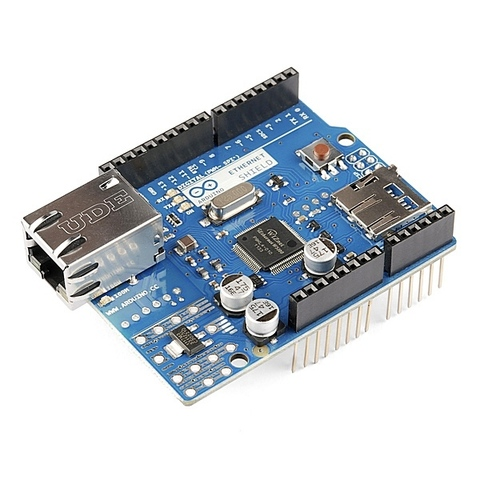

{kind=link}

Ethernet шилд W5100 для Mega 2560 1280 328 UNO R3

Артикул: W5100
Код товара: 00383
Нет в наличии
672 руб
РАСПРОДАНО
Доставка заказов
|
По Москве |
По России |
|
Международная доставка осуществляются компанией СДЭК. Расчёт стоимости доставки по запросу на e-mail. | |
Описание
Ethernet шилд W5100 служит для подключения микроконтроллера Arduino к сети Ethernet через кабель TCP/IP и соединения с интернетом. Содержит гнездо для установки карты microSD, благодаря чему данные о работе системы, в которую входит Ethernet шилд W5100, записывается на карту microSD и считываются с нее. Имеется кнопка сброса.
Соединение с сетью происходит с помощью разъема RJ45. Внутри разъема расположены трансформаторы для гальванической развязки устройства от сети. Используя модуль можно организовать сервер, хранящий данные на карте памяти. Основа устройства – микросхема W5100 фирмы Wiznet. Микросхема аппаратно реализует следующие протоколы транспортного, сетевого и канального уровней: TCP, UDP, IPv4, ICMP, ARP, IGMP и MAC. Есть аппаратная поддержка протокола PPPoE (Point-to-point over Ethernet) с PAP/CHAP протоколами аутентификации, что позволяет осуществлять удаленное подключение встраиваемого устройства к провайдеру через простой и дешевый DSL-модем, работающий в мостовом (bridge) режиме и не имеющий собственной аппаратной поддержки PPPoE. Данные Ethernet и microSD карты передаются на плату микроконтроллера Arduino через интерфейс SPI.
Подключение к микроконтроллеру Arduino выполняется с помощью штыревого разъёма. Соединение с интерфейсом SPI происходит благодаря розетке расположенной на нижней стороне платы. Соединители позволяют дополнительно установить сверху модули Arduino “в несколько этажей”. Устанавливаемый сверху модуль должен иметь длинные контакты, поскольку сетевой разъем RJ-45 имеет значительные размеры. Питание осуществляется от основного модуля Arduino.
Индикация
На плате расположены светодиоды, показывающие режим работы:
ON – включение,
LINK – указывает на наличие соединения и мигает, когда прибор передает или принимает данные,
100M – сетевое соединение со скоростью 100 Мбит/с,
RX – при приеме данных мигает,
TX – мигает, когда прибор отправляет данные.
Совместимость с основными модулями Arduino
Подключается ко всем полноформатным версиям главного модуля Arduino. Обмен данными между основным модулем Arduino и двумя узлами Ethernet шилд W5100 происходит через интерфейс SPI.
Подключение к UNO.
Использованы контакты цифровых сигналов, выполняющие следующие функции:
11 – MOSI,
12 – MISO,
13 – SCK,
10 – SS для Ethernet контроллера,
4 – SS для карты памяти.
Подключение к Mega.
В передаче сигналов участвует соединитель ICSP из шести контактов. Цифровые контакты выполняют следующие функции:
50 – MISO,
51 – MOSI,
52 – SCK,
10 – slave select для Ethernet контроллера,
4 – slave select для карты памяти.
Контакт 53, формирующий сигнал SS (Slave Select) не используется. Для корректной работы SPI-шины он должен быть переведен в режим выхода. Изменения в программе при работе с главным модулем Mega: pinMode (10, OUTPUT) поменять на pinMode (53, OUTPUT).
Активный уровень сигнала SS – низкий. Использовать контакты цифровых сигналов 10 и 4 в схемах с W5100 для другого применения нельзя. Карта microSD и контроллер Ethernet разделяют одну шину SPI и не могут работать одновременно – их нужно переключать во время работы.
Подключение к сети
Модулю должен быть присвоен MAC адрес и IP адрес, используя функцию Ethernet.begin (). Прибор поставляются с наклейкой, указывающей МАС адрес. Допустимый IP адрес зависит от конфигурации сети. Можно использовать DHCP для динамического назначения IP адреса. Можно указать сетевой шлюз и подсеть.
Для подключения к сети есть специальная программная библиотека Ethernet. Модуль W5100 может служить сервером или клиентом. Библиотека поддерживает до четырех одновременных подключений (входящие, исходящие или в комбинации).
Подключение к компьютеру требует использование перекрестного кабеля TCP/IP сrossover.
Программирование
Программное обеспечение находится в свободном доступе с открытым исходным кодом. Примеры библиотек на сайте Arduino http://arduino.cc/
|
ChatServer |
Создать простой чат-сервера. |
|
WebClient |
Сделать запрос на HTTP. |
|
WebClientRepeating |
Повторные запросы HTTP. |
|
WebServer |
HTML-страница, которая отображает значения аналоговых датчиков. |
|
BarometricPressureWebServer Вывод значения от датчика давления на веб-страницу. |
Вывод значения от датчика давления на веб-страницу. |
|
UDPSendReceiveString |
Отправлять и получать текстовые строки с помощью UDP. |
|
UdpNtpClient |
Запрос о Network Time Protocol (NTP) сервер, используя UDP. |
|
DnsWebClient |
DNS и DHCP на основе веб-клиент. |
|
DhcpChatServer |
Простой DHCP Chat Server. |
|
DhcpAddressPrinter |
Получить IP-адрес с помощью DHCP. |
|
TelnetClient |
Простой клиент Telnet. |
Для работы с картой microSD требуется библиотека SD Library. Если вы используете оба устройства модуля, то программа должна обеспечивать их совместную работу.
Поддержка прерываний W5100 в стандартных программных библиотеках не реализована. Программная библиотека работает традиционным для Arduino методом постоянного опроса состояния буфера из скетча.
Характеристики
Напряжение питания 5 B
Одновременная и независимая поддержка 4-х соединений.
Внутренний буфер 16 кбит
Скорость подключения: 10 и 100 Мбит/с
Домашняя страница
Техническое описание
Электрическая схема
Pinout Diagram (расположение контактов)
Пример использования
�